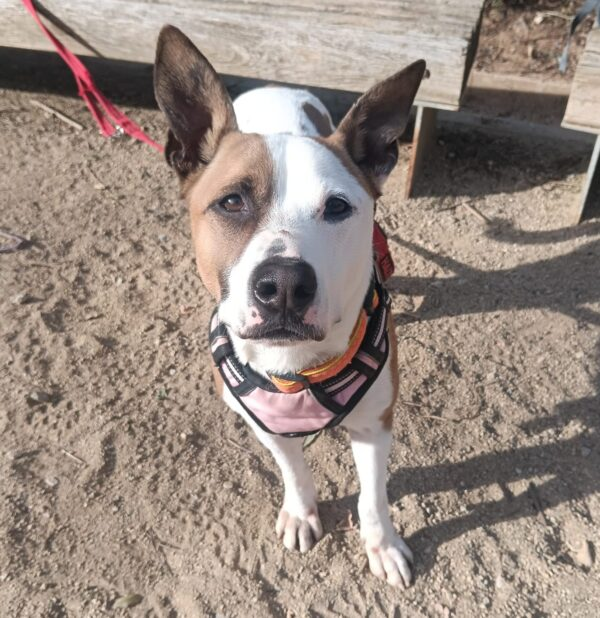
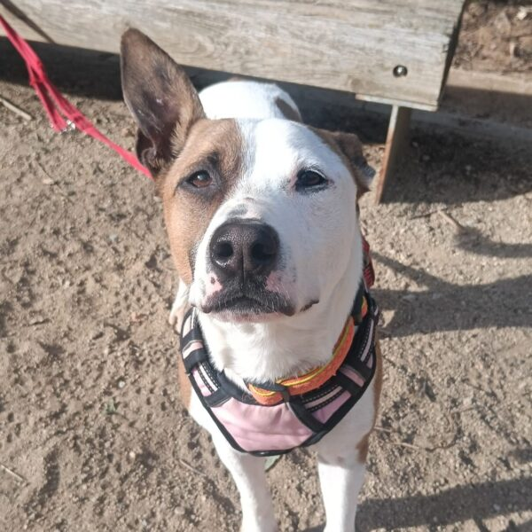

Ells també esperen



Capri es una perrita muy sensible, dulce y cariñosa. Llegó a nosotros tras ser un regalo de una familia que no pudo atenderla adecuadamente. Su abandono le afectó profundamente: estuvo triste, apagada y lloraba constantemente. Con el tiempo, y gracias al cariño de los cuidadores y a la compañía de sus amigos perrunos, ha conseguido salir adelante.
Aun así, Capri es una perrita muy hogareña y apegada. La vida en el refugio le resulta dura y la notamos triste, está claro que lo que más desea es un hogar donde sentirse segura, recibir cariño, compartir siestas, juegos… y ser feliz.
Cuando llegó, notamos que sufría bastante ansiedad. En la calle, al ver a otros perros, no reaccionaba de la mejor manera: estaba tan ansiosa por interactuar que sus encuentros resultaban frustrantes. Seguramente, en su anterior hogar nunca tuvo la oportunidad de socializar correctamente, a pesar de ser joven y con muchas ganas de jugar. Hoy, Capri ha avanzado muchísimo. En el patio del refugio disfruta conociendo nuevos perros, ha hecho muchos amigos y siempre es de las primeras en acercarse a saludar a los nuevos. Con su carita inocente consigue que otros la sigan, y cuando se animan, ella los invita a carreras y juegos sin parar. Se nota que es feliz interactuando con otros perritos.
Capri busca una familia comprensiva, cariñosa y comprometida, que le ayude a dejar atrás un pasado que nunca debió vivir y le ofrezca todo el amor que merece.
Capri solo necesita a esa persona especial que le devuelva la estabilidad, el amor y la confianza ue perdió. A cambio, ofrecerá lealtad, cariño y una conexión única.